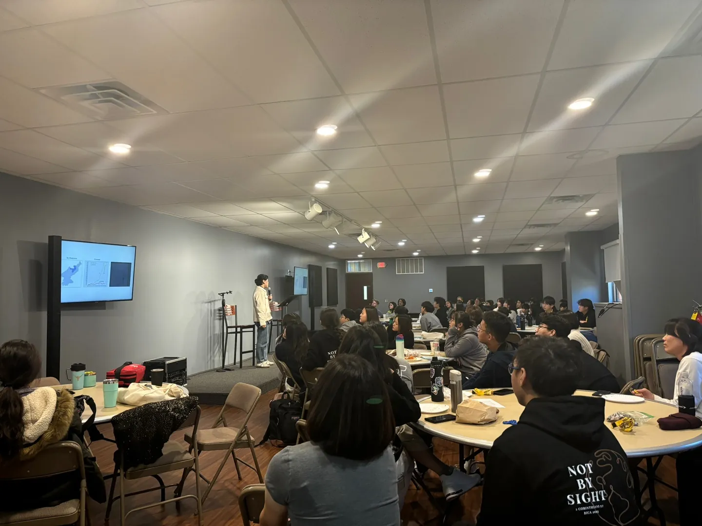
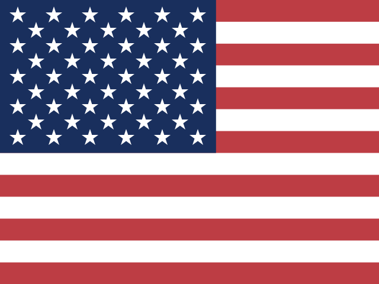
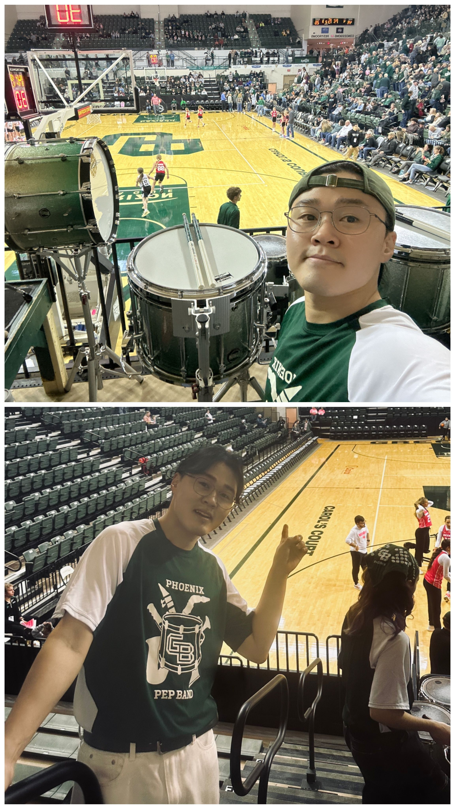
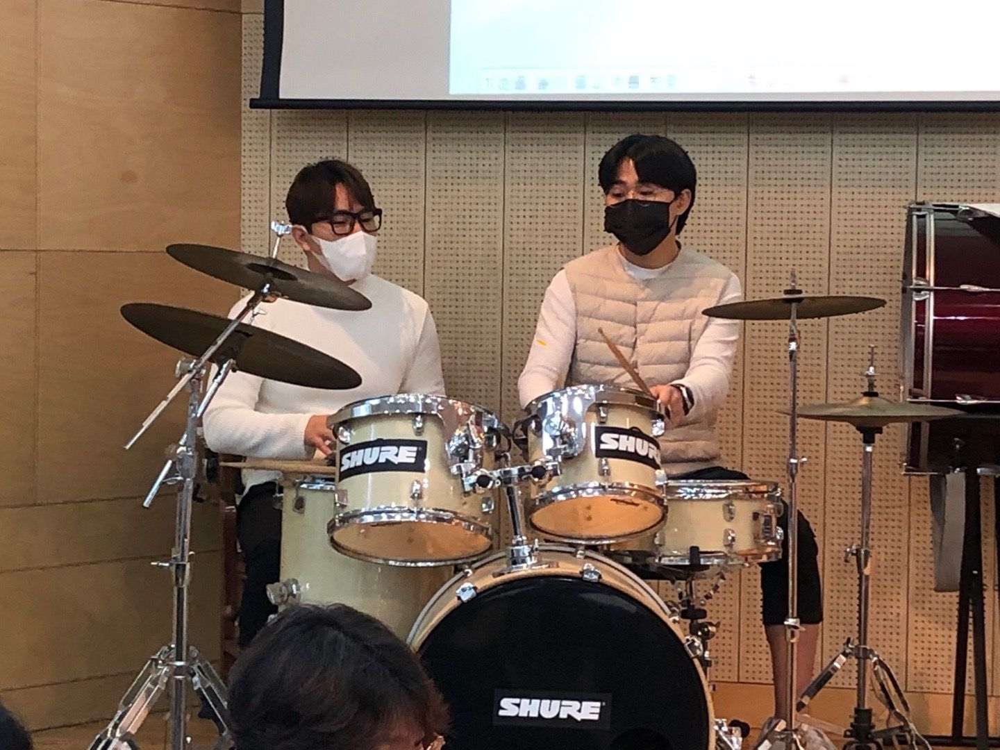
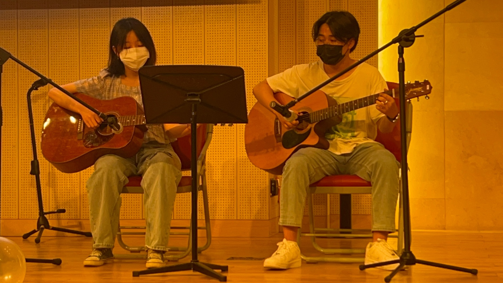

SGH Warsaw School of Economics (폴란드)SGH Warsaw School of Economics (Poland)
- 2026.10 ~ 2027.02
- Yonsei University 교환 프로그램Yonsei University Exchange Program
허들링(Huddling)이란, 황제펭귄들이 한데 모여 서로의 체온으로 혹한의 겨울 추위를 견디는 방법으로 무리 전체가 돌면서 바깥쪽과 안쪽에 있는 펭귄들이 계속해서 서로의 위치를 바꾸는 것을 의미합니다. 바깥쪽에 있는 펭귄들의 체온이 떨어질 때 서로의 위치를 바꾸므로 한겨울의 추위를 함께 극복할 수 있습니다.Huddling is how emperor penguins survive the harshest cold of the Antarctic winter: they gather in a tight group and share body heat, with the whole colony slowly rotating so that the penguins on the outer edge and those closer to the center keep trading places. As the outermost penguins start to lose warmth, they shift positions with those inside, letting the group weather the depths of winter together.
한때, 저 또한 도움이 필요했고, 대가를 바라지 않고 도와주신 많은 분들 덕분에 지금까지 잘 성장할 수 있었습니다. 도움을 주셨던 모든 분들께 진심으로 감사드립니다. 아직 부족하지만, 저도 도울 수 있는 부분을 도우면서 한 걸음씩 성장해가고 있습니다. 제가 받은 사랑을 잊지 않고, 다시 사회에 흘려보내는 사람으로 성장하고 싶습니다.There was a time when I needed help too, and I have been able to grow into who I am today because so many people supported me without ever expecting anything in return. I am deeply grateful to everyone who has helped me along the way. I still have far to go, but I am growing step by step, lending a hand wherever I can. I hope to become someone who never forgets the love I was given, and who keeps passing that love forward into the world.
University of Wisconsin–Green Bay, 미국 국무부 UGRAD ProgramUniversity of Wisconsin–Green Bay, U.S. Department of State UGRAD Program
보기 →View →플라스틱 사용 저감 앱, 기획부터 출시까지 주도An app for reducing plastic use, led from planning to launch
보기 →View →미국 국무부 Global Scholar 선정 기사 외 1편Featured as U.S. State Department Global Scholar, and one more article
보기 →View →소개About소개Bio연혁Journey
북한 출생 · Yonsei 경영학 · SGH·UWGB 교환 · 한국어·영어·중국어Born in North Korea · Business at Yonsei · Exchange at SGH & UWGB · Korean, English, Chinese
활동Experience교환 프로그램Exchange Programs리더십Leadership북한 관련 강연Talks on North Korea봉사Volunteering교육·멘토링Teaching & Mentoring후원 단체Affiliated Organizations동아리Clubs독서 모임Book Club방문 국가Countries Visited기타Other
UGRAD · Fulbright Korea · 리더십 · 북한 강연 · 봉사·멘토링 · 여행UGRAD · Fulbright Korea · Leadership · Talks on North Korea · Volunteering & Mentoring · Travel
아래 기관에서 북한의 경제·교육·사회 등을 주제로 강연Conducted lectures on North Korean economy, education, society, etc. at the following organizations.

장학금 일부를 아래 두 단체에 기부Donating a portion of my scholarships to the following two organizations.

미국USA프로젝트 & 역량Projects & SkillsEcoStep 앱EcoStep AppPowerPoint자격증CertificationsAINotion
EcoStep 앱 · PPT · ITQ·GTQ·HubSpot · Notion · AIEcoStep App · PPT · ITQ, GTQ, HubSpot · Notion · AI
관심 연구Research Interests연구 경험Research Experience전공 수강 과목Major Coursework
전략 · 혁신 · 문화(조직문화, 문화와 경영전략) · 경제 체제와 비즈니스 · AI와의 시너지 · 1인 창업Strategy · Innovation · Culture (Organizational Culture, Culture & Business Strategy) · Economic Systems & Business · Synergy with AI · Solo Entrepreneurship
수상 & 기사Awards & Press대학University중고등학교Middle & High School기사Press
경영학과 상위 1% · GPA 4.16 · SEF 2025 장려상 · 고교 3년 전교 1등 · 기사 2편Top 1% in Business · GPA 4.16 · SEF 2025 Award · 1st in High School for 3 Years · 2 Press Articles
기타More음악Music사진 & 영상Photos & Videos
드럼 · 기타 · 피아노 · 사진 · 영상Drums · Guitar · Piano · Photos · Videos


